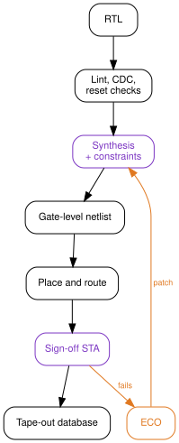
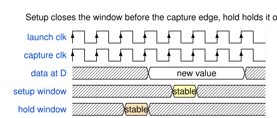
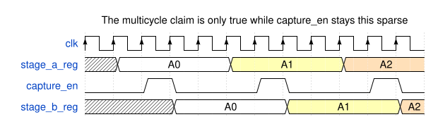
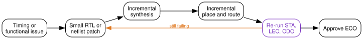

{kind=link}
Series: Intermediate SoC Design | Article 4 of 10
The report was green
Sign-off timing passed. Worst negative slack across every corner was positive, by a comfortable margin on setup and a thin one on hold. The block had been the hardest one in the project, and it was finally done. Somebody put a chart in the review deck showing the slack climbing out of the red over six weeks.
The chip came back and mostly worked. In the cold chamber, one part in a few hundred returned bad data from a configuration register, but only when the register was written while a particular unrelated interface was active. Nobody could reproduce it in simulation, because in simulation the design is exactly as correct as the day it was signed off.
This article is about synthesis and timing closure: what the tools genuinely prove, what they only appear to prove, and where the gap between the two usually opens up. It targets engineers writing register transfer level (RTL) code that has to meet a frequency target, and anybody who has inherited a constraint file and is wondering how much of it to trust.
What synthesis is being asked to do
Synthesis maps RTL onto standard cells from a technology library: flip-flops and latches, combinational gates, arithmetic structures, clock gating cells, and in low-power flows the isolation and retention cells that survive a powered-down domain.
It does that mapping while trying to satisfy your constraints and minimise area, power, and delay. The word to notice is your. The tool has no independent notion of what the design is supposed to do at speed. It optimises against the constraint file, and if the constraint file is wrong it will produce an efficient, well-optimised implementation of the wrong intent.

Two stages on that path are marked in purple because they are the only two that read the constraints. Everything downstream inherits whatever those two were told.
What static timing analysis proves
Static timing analysis (STA) checks every path in the design without simulating a single input vector. It builds a graph from register clock pins, combinational arcs through cells, net delays extracted after routing, clock tree delays and skew, library setup and hold requirements, and your constraints.
For a path to work, the data launched by one edge has to arrive and settle before the edge that captures it:
launch edge + clock-to-Q + data path delay + setup time
<=
capture edge + useful skew - uncertainty
Hold is the same relationship read from the other end. The data must not arrive so early that it overwrites the value the capture flip-flop is still reading from the previous edge.

The two failures have opposite personalities, and it is worth internalising which corner makes each one worse.
| Failure | Meaning | Worst at | Common fixes |
|---|---|---|---|
| Setup | Data arrives too late | Slow silicon, low voltage, high temperature | Reduce logic depth, resize cells, pipeline, improve placement |
| Hold | Data arrives too early | Fast silicon, high voltage, low temperature | Add delay cells, adjust clock skew, correct the constraint |
Setup failures are a performance problem: run the part slower and they go away. Hold failures are not. A hold violation is broken at every frequency, including zero, which is why a hold bug in silicon is usually a respin and a setup bug is usually a de-rated data sheet.
The constraint file is the specification
Most ASIC and FPGA flows describe timing intent in Synopsys Design Constraints (SDC) syntax. A minimal block might start like this:
# Primary clock: 1 GHz
create_clock -name core_clk -period 1.000 [get_ports core_clk]
# External interface timing, relative to that clock
set_input_delay 0.250 -clock core_clk [get_ports rx_data*]
set_output_delay 0.300 -clock core_clk [get_ports tx_data*]
# Jitter and analysis margin
set_clock_uncertainty 0.050 [get_clocks core_clk]
# Asynchronous reset assertion is not a functional timing path
set_false_path -from [get_ports reset_n]
Five commands, and every one of them is a claim about the world outside the block. The period claims what the clock generator will produce. The input delay claims when the upstream block launches. The uncertainty claims how much jitter the phase-locked loop contributes. The false path claims that reset assertion never needs to be captured on a specific edge.
None of those claims are checked by anything. They are inputs.
That is the reason a constraint file deserves the same review a piece of RTL gets: an owner, a version history, a comment on every non-obvious line, and a reviewer who is allowed to ask "how do you know?".
Exceptions, and the damage they hide
Three SDC commands exist to tell STA to relax. All three are legitimate. All three are also the standard way to make a report turn green without changing a gate.
A false path says the path is not real and should not be analysed. A configuration register that only changes during reset, a scan-mode path that is inactive functionally, a test observation output nobody samples at speed.
A multicycle path says the path is real but has more than one clock period to complete.
# Data launched by stage_a is captured by stage_b two cycles later
set_multicycle_path 2 -setup \
-from [get_cells stage_a_reg*] \
-to [get_cells stage_b_reg*]
# The hold check has to move with it
set_multicycle_path 1 -hold \
-from [get_cells stage_a_reg*] \
-to [get_cells stage_b_reg*]
That second command is the one that gets left out, and leaving it out is worse than not writing the exception at all. A setup relaxation without the matching hold adjustment tells the tool the data may arrive a cycle late, while still requiring it not to arrive early relative to the original edge. The tool will happily insert delay to satisfy a hold check that was never the real requirement, or fail to insert it where it was.
A multicycle constraint is only true if the destination register genuinely cannot capture every cycle. That means an enable, and the enable has to be provably sparse:

If a later revision adds a bypass mode that asserts capture_en every cycle,
the RTL change is one line, the constraint is still in the file, and the timing
report still passes.
A clock group says two clocks have no known phase relationship:
set_clock_groups -asynchronous \
-group [get_clocks cpu_clk] \
-group [get_clocks periph_clk]
This is the most misread of the three. It does not make the crossing safe. It does not add a synchroniser. It tells STA to stop analysing a relationship that was never meaningful, and the correctness of the crossing is now entirely the job of clock domain crossing (CDC) analysis and the synchronisers in the RTL. Declaring the group and skipping the CDC review removes the only check that was looking.
The gap
Here is the reframe, and it is the whole article.
Static timing analysis never tells you whether the chip works. It tells you whether the implementation matches the constraints. Those are the same statement only to the extent that the constraints are true, and nothing in the flow verifies that they are.
{kind=link}
Read the failure at the top of the article again with that in mind. The
configuration register had a set_false_path on it, added early, when the
register really was written only during reset. Two years later a feature landed
that reprogrammed it at runtime while the interface was live. The RTL review
covered the new write path. Nothing in the flow re-examined the exception,
because an exception is not code, it produces no warning, and it fails silently
by making a real path invisible.
That is the shape of nearly every timing bug that reaches silicon. Not a path the tool got wrong, but a path the tool was told not to look at.
Which is why the useful question during a closure review is not "what is the worst negative slack". It is "how many paths are we not analysing, who decided that, and is the reason still true".
# Worth running, and reviewing line by line, before every sign-off
report_exceptions -ignored
report_disable_timing
report_clock_properties
An exception with no comment and no owner should be treated as a bug until somebody re-derives the argument for it.
Reading a report
When a path genuinely fails, the report tells you what kind of problem it is, provided you read past the slack number.
Startpoint: u_decode/op_reg[3]
Endpoint: u_execute/alu_result_reg[17]
Path group: core_clk
Slack: -0.083 ns
clock-to-Q 0.061
decode mux 0.142
compare 0.188
operand mux 0.221
adder 0.364
route 0.177
setup 0.043
required 1.000
The distribution matters more than the total. Here the logic dominates and no single cell is pathological, which means this is a microarchitecture problem and cell sizing will not save it. A different failure profile would call for a different response:
| What dominates | What it usually means | Where to fix it |
|---|---|---|
| Many small logic stages | Logic depth | RTL: split the chain, add a stage |
| One large cell delay | Weak drive, high fanout | Tools: sizing, buffering, cloning |
| Routing delay | Placement or floorplan | Physical: placement constraints, partitioning |
| Clock skew or uncertainty | Clock tree or margin | Clock tree synthesis, useful skew |
| Required time surprises you | The constraint is wrong | The SDC |
That last row is the one worth checking first, because it is the cheapest to fix and the most embarrassing to find late. If the required time is not the number you expected, stop looking at the data path.
Fixing it in RTL
The fixes available in RTL are the ones that change how much work sits between two registers:
- Register the output of a wide multiplexer rather than the input of the next stage's logic.
- Split long add, compare, and select chains, especially where a comparison result selects an operand for an addition in the same cycle.
- Avoid the accidental priority encoder. A
casewith overlapping conditions or a longif / else ifchain in a datapath synthesises into a serial structure, and one-hot control costs area but flattens the delay. - Duplicate a high-fanout control register into local copies near its consumers, rather than asking the tool to buffer one signal across the block.
- Move work across an existing stage boundary before adding a new one, since the free rebalance is always better than the stage that costs a cycle of latency.
The pattern behind all five is the same: timing closure is easy when the microarchitecture already has clean stage boundaries, and the earlier article in this series on pipeline hazards is the reason those boundaries are not free to add later.
Fixing it in the tools
Implementation tools have their own set of moves: cell sizing, buffer insertion, logic restructuring, register retiming, placement constraints, useful skew, and clock tree adjustment.
They are genuinely powerful, and retiming in particular can rebalance logic across register boundaries in ways that would be tedious by hand. But they all work within the structure the RTL gave them. No amount of sizing will fit two cycles of logic into a one-cycle budget, and a path that needs a microarchitecture change will keep coming back on every run, slightly differently each time, consuming a week per iteration.
The tell is a path that oscillates. Fix it, and it closes, and something adjacent opens. That is not a tool failure. That is a design that has no slack anywhere in a region, and the tool is moving a fixed shortage around.
Every corner, every mode
A single timing run is one point in a space the chip has to survive all of.
Slow silicon, low voltage, high temperature -> setup worst case
Fast silicon, high voltage, low temperature -> hold worst case
Functional, scan, retention, low-power modes -> different constraints each
Multiply the process, voltage, and temperature corners by the operating modes and the analysis views multiply with them. The sign-off question is not "does the design meet timing", it is "does every mode meet timing at every corner it can be in".
{kind=link}
Two practical consequences. First, a corner nobody enabled is a corner nobody checked, so the list of analysis views is itself a review item. Second, low-temperature inversion means the fast corner is not simply "everything is quicker": at modern nodes some cells get slower at low voltage as temperature drops, so the intuition that cold silicon is fast silicon is not reliable and the corner list has to come from the library characterisation, not from reasoning.
The ECO loop
Late fixes go in as an engineering change order: a small, surgical patch to a design that is otherwise finished.

The purple node carries the risk. An ECO is small in the netlist and unbounded in what it can invalidate: timing on adjacent paths, logical equivalence against the RTL, CDC structures, power intent, and any software-visible behaviour that verification signed off weeks earlier. Every ECO needs the full check set re-run, and the discipline that makes late ECOs survivable is keeping them small enough that the re-run is credible.
Closure checklist
- Give the constraint file an owner and a version history, and review it like RTL.
- List every exception in the design with a one-line justification and the name of the person who made the argument.
- Re-derive those justifications whenever the RTL around them changes, because nothing else will.
- Pair every
-setupmulticycle with its matching-hold, and prove the capture enable is as sparse as the constraint claims. - Treat
set_clock_groups -asynchronousas a note to STA, never as a CDC solution, and check the synchronisers separately. - Track worst negative slack and total negative slack per path group, since a single bad path and a thousand marginal ones need different responses.
- Confirm the analysis view list covers every corner and mode the part can actually be in, including the ones only test or retention can reach.
- Re-run lint, CDC, logical equivalence, and STA after every ECO, without exception, however small the patch.
Ask what is not being analysed
The number at the top of the timing report tells you how the paths under analysis are doing. It says nothing at all about the paths that were removed from analysis, and those are the ones with a history of reaching silicon.
Before the next sign-off, dump the exception list and read it end to end. On a mature design it will be longer than you expect, and some fraction of it will be constraints written by people who have left, against RTL that has since changed, for reasons nobody recorded. That fraction is your actual risk, and it is countable in an afternoon.
Previous: Article I-03: Pipeline design and hazards Next: Intermediate Article 05, Clock domain crossing techniques